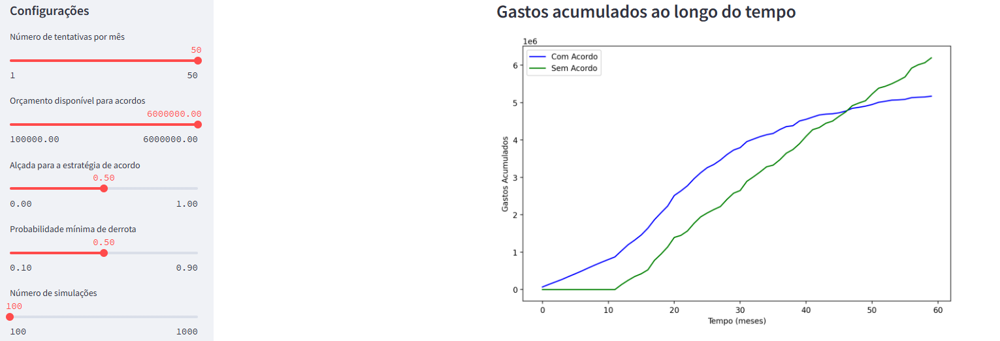

from IPython.display import IFrame
IFrame('assets/decisao.pdf', width=600, height=450)10 Aplicações corporativas
Como vimos, ciência de dados aplicada ao direito pode ser aplicada em diversas situações. Aqui, vamos trabalhar com duas aplicações focadas em departamentos jurídicos de empresas. A primeira é o provisionamento e a segunda é a estratégia de acordo.
10.1 Provisionamento
Você trabalha no departamento jurídico de uma grande empresa que vende eletrônicos. A empresa possui uma base de dados de 1000 processos encerrados e 100 casos ativos. A empresa quer saber quanto deve provisionar em cada um dos casos ativos. Para isso, ela te forneceu a base de dados com os processos encerrados e ativos.
O provisionamento é uma prática contábil que visa alocar recursos financeiros para cobrir possíveis perdas futuras. Ela é comum em departamentos jurídicos de empresas, já que os litígios têm, por natureza, prazo e valor incertos.
As provisões, passivos contingentes e ativos contingentes são regulados pelo Pronunciamento Contábil número 25 do Comitê de Pronunciamentos Contábeis (CPC 25). O CPC25 é baseado no International Accounting Standard (IAS) número 37, produzido pelo International Accounting Standards Board (IASB).
10.1.1 Definições
Segundo o CPC25, temos as definições abaixo:
- Provisão: passivo de prazo ou valor incerto.
- Passivo: obrigação presente da entidade, derivada de eventos passados, cuja liquidação se espera que resulte em saída de recursos da entidade capazes de gerar benefícios econômicos.
- Passivo contingente: duas possíveis definições:
- obrigação presente (possível) que resulta de eventos passados e cuja existência será confirmada apenas pela ocorrência ou não de um ou mais eventos futuros incertos que não estão totalmente sob controle da entidade.
- uma obrigação presente que resulta de eventos passados, mas que não é reconhecida porque: i) não é provável que uma saída de recursos que incorporam benefícios econômicos seja exigida para liquidar a obrigação; ou ii) o valor da obrigação não pode ser mensurado com confiabilidade.
Em sentido geral, todas as provisões são contingentes porque são incertas quanto ao seu prazo ou valor. Porém, nem todos os passivos contingentes são provisões. Para ser uma provisão, a obrigação deve ser presente e derivada de eventos passados.
Uma provisão deve ser reconhecida quando:
- a entidade tem uma obrigação presente como resultado de um evento passado;
- é provável que uma saída de recursos que incorporam benefícios econômicos seja exigida para liquidar a obrigação; e
- o valor da obrigação pode ser mensurado com confiabilidade.
10.1.2 Explicando as definições
As definições de provisão e passivo contingente são bastante técnicas. Vamos explicar com um exemplo.
Um caso acaba de chegar no departamento jurídico. Trata-se de uma reclamação de um consumidor que comprou uma máquina de lavar da empresa e alega que o aparelho pegou fogo, sem causar danos às pessoas, mas causando danos a um móvel. O valor da reclamação é de R$ 15.000,00.
No momento que o caso chega, a empresa tem uma obrigação possível (o processo judicial), que resulta de um evento passado (a venda da máquina de lavar). Porém, a empresa ainda não sabe se a reclamação é procedente. Portanto, estamos na situação de passivo contingente. Nas bases de dados jurídicas, geralmente esses casos são classificados como perda possível.
Suponha que, após a realização de uma perícia e da análise cuidadosa da sua equipe de advocacia, a empresa conclui que o fogo do aparelho não foi causado por defeito de fabricação, mas sim por um erro do consumidor. Nesse caso, ainda temos um passivo contingente, mas a empresa pode optar por classificar esse caso como perda remota.
Suponha, por outro lado, que a perícia e a análise da equipe de advocacia concluem que o fogo foi causado por defeito de fabricação. Nesse caso, é provável que a empresa tenha que pagar uma indenização e o valor da indenização pode ser mensurado com confiabilidade. Nesse caso, o caso pode ser classificado como perda provável e a empresa pode provisionar o valor da indenização.
Provisionar significa alocar recursos financeiros para cobrir possíveis perdas futuras. Geralmente isso é feito guardando-se uma quantia em dinheiro em uma conta bancária específica para esse fim. O valor provisionado é contabilizado como um passivo no balanço da empresa. Por um lado, a provisão garante que a empresa tenha recursos para cobrir as perdas quando elas se manifestarem na realidade. Por outro lado, a provisão pode limitar a atuação da empresa, já que ela está reservando uma quantia para cobrir possíveis perdas.
Além de alocar os recursos financeiros, a empresa deve relatar a provisão em suas demonstrações financeiras. Ou seja, os relatórios financeiros da empresa devem informar que a empresa provisionou um determinado valor para cobrir possíveis perdas futuras. Isso pode afetar a imagem da empresa perante investidores, credores e outros interessados.
Por isso, é importante que o provisionamento seja feito de forma precisa. Se a empresa provisionar muito, ela pode ter menos recursos disponíveis para investir em outras áreas e pode ter uma imagem de empresa com muitos problemas jurídicos. Se a empresa provisionar pouco, ela pode ter problemas de caixa no futuro.
Vale notar que isso é apenas um resumo de um tópico relativamente longo. Nosso objetivo é ver como a ciência de dados pode ajudar nesse processo. Se você quiser saber mais sobre o CPC25, recomendamos a leitura do pronunciamento completo e a consulta a profissionais de contabilidade.
Vale notar também que estamos falando apenas dos passivos contingentes. Existem também os ativos contingentes, que são direitos presentes que surgem de eventos passados e cuja existência será confirmada pela ocorrência ou não de um ou mais eventos futuros incertos que não estão totalmente sob controle da entidade. Por exemplo, uma empresa pode ter um ativo contingente se ela ganhar um processo judicial contra um concorrente. Nesse caso, a empresa terá um direito presente (o direito de receber uma indenização) que surgiu de um evento passado (a violação de uma patente) e cuja existência será confirmada pela decisão judicial. Porém, a empresa não pode reconhecer esse ativo na contabilidade até que a decisão judicial seja proferida. Como a dinâmica contábil dos ativos contingentes é diferente da dos passivos contingentes, não vamos abordá-los nesta apostila.
from IPython.display import IFrame
IFrame('assets/resultados_gpa.pdf', width=600, height=450)10.1.3 Como a ciência de dados pode ajudar?
Cada empresa possui uma política de provisionamento. Essa política está relacionada com os critérios utilizados para classificar casos como perda possível, perda remota e perda provável. A política de provisionamento é uma decisão estratégica da empresa e pode variar de acordo com o setor, o porte e a cultura da empresa.
Geralmente, os processos judiciais começam como perda possível e, à medida que a empresa obtém mais informações, eles são reclassificados como perda remota ou perda provável. Por exemplo, se ocorre uma sentença de primeira instância desfavorável à empresa, o caso pode ser reclassificado como perda provável. Se a sentença é favorável à empresa, o caso pode ser reclassificado como perda remota. Essa classificação, na maioria dos casos, é feita manualmente por advogados, que analisam os documentos do processo, as decisões judiciais e as informações obtidas em audiências e perícias.
É nessa parte que a ciência de dados pode ajudar. A ciência de dados pode ser utilizada para analisar as bases de dados jurídicas e criar modelos que produzem a probabilidade de perda de cada caso, permitindo sua classificação como perda possível, remota ou provável. Por ser baseada no histórico de processos judiciais, essa análise pode ser mais precisa e rápida do que a análise manual feita pelos advogados, economizando recursos e aumentando a transparência do processo de provisionamento.
Como vimos anteriormente, no entanto, não é só o resultado do processo que importa para fins de provisionamento. A empresa também precisa saber o valor da indenização que ela terá que pagar se o caso for desfavorável. A ciência de dados também pode ser utilizada para predizer o valor da indenização para cada caso.
Por último, também é importante saber predizer o tempo que o caso vai levar para ser encerrado. Isso é importante porque a empresa precisa provisionar recursos financeiros para cobrir as despesas com o caso enquanto ele estiver em andamento. No entanto, a empresa não precisa provisionar imediatamente todos os processos, já que alguns deles podem demorar muitos anos para serem encerrados. Os modelos de predição de tempo de encerramento de processos judiciais podem ajudar a empresa a decidir quais processos devem ser provisionados imediatamente e quais podem esperar.
Obs: O provisionamento considerando o tempo de encerramento do processo é uma prática comum em departamentos jurídicos de empresas. Porém, não é uma prática contábil. O provisionamento contábil é feito apenas com base na probabilidade de perda e no valor da indenização. O tempo de encerramento do processo é uma variável importante para a gestão do departamento jurídico, mas não é uma teoria consolidada na contabilidade.
10.1.4 Exemplo prático
Agora que vimos os conceitos, vamos ver um exemplo prático. Suponha que a empresa de eletrônicos quer saber quanto deve provisionar em cada um dos 100 casos ativos. Para isso, ela te forneceu a base de dados com os processos encerrados e ativos. A base de dados contém as seguintes variáveis:
id: identificador do processoencerrado: indica se o processo está encerrado (1) ou ativo (0)perda: indica se o processo resultou em perda (1) ou vitória (0)valor_final: valor da indenização paga no processotempo: tempo de duração do processo até seu encerramentoassunto: assunto do processo, que pode ser “consumidor”, “trabalhista” ou “tributário”, por exemplovalor_causa: valor da causa do processodata_distribuicao: data de início do processocomarca: comarca onde o processo foi distribuído, que pode ser “São Paulo”, “São Bernardo do Campo” ou “Santo André”, por exemplodecisao_desfavoravel: indica se houve uma decisão desfavorável à empresa em primeira instância (1) ou não (0)
Vamos simular uma base de dados com 1000 processos encerrados e 100 processos ativos usando o python. A base de dados simulada é a seguinte:
import pandas as pd
import numpy as np
import random
from datetime import datetime, timedelta
def random_date(start, end):
return start + timedelta(days=random.randint(0, int((end - start).days)))
np.random.seed(42)
random.seed(42)
n_encerrados = 1000
n_ativos = 100
def gerar_valor_final(perda, valor_causa, assunto, comarca, encerrado):
if encerrado == 0:
return np.nan
if perda == 0:
return 0
base = valor_causa * np.random.uniform(0.8, 1.2)
if assunto == "trabalhista":
return base * np.random.uniform(0.8, 1.1)
elif assunto == "tributário":
return base * np.random.uniform(1.1, 1.5)
else:
return base * np.random.uniform(0.9, 1.3)
def gerar_tempo(assunto, comarca):
base_tempo = np.random.randint(300, 1500) # Base aleatória de 300 a 1500 dias
if assunto == "tributário":
base_tempo *= 2
if comarca == "São Paulo":
base_tempo *= 0.7
return base_tempo
def gerar_prob_perda(valor_causa, assunto, comarca, decisao_desfavoravel, encerrado):
base_prob = 0.3 if assunto == "tributário" else 0.2
if decisao_desfavoravel == 1:
base_prob += 0.6
if valor_causa > 50000:
base_prob += 0.4
prob_final = 1 if np.random.uniform(0, 1) < base_prob else 0
if encerrado == 0:
prob_final = np.nan
return prob_final
n_processos = 1100
processos_simulados = pd.DataFrame({
'id': range(1, n_processos + 1),
'encerrado': [1] * 1000 + [0] * 100, # 1000 encerrados, 100 ativos
'valor_causa': np.round(np.random.uniform(1000, 100000, size=n_processos), 2),
'assunto': np.random.choice(['consumidor', 'trabalhista', 'tributário'], size=n_processos),
'comarca': np.random.choice(['São Paulo', 'São Bernardo do Campo', 'Santo André'], size=n_processos),
'decisao_desfavoravel': np.random.choice([0, 1], size=n_processos, p=[0.6, 0.4]), # 60% não desfavorável
'data_distribuicao': [random_date(datetime(2010, 1, 1), datetime(2023, 12, 31)) for _ in range(n_processos)]
})
processos_simulados['perda'] = processos_simulados.apply(
lambda x: gerar_prob_perda(x['valor_causa'], x['assunto'], x['comarca'], x['decisao_desfavoravel'], x['encerrado']), axis=1
)
processos_simulados['valor_final'] = processos_simulados.apply(
lambda x: gerar_valor_final(x['perda'], x['valor_causa'], x['assunto'], x['comarca'], x['encerrado']), axis=1
)
processos_simulados['tempo'] = processos_simulados.apply(
lambda x: gerar_tempo(x['assunto'], x['comarca']) if x['encerrado'] == 1 else np.nan, axis=1
)
processos_simulados['valor_final'] = processos_simulados.apply(
lambda x: min(x['valor_final'], x['valor_causa']), axis=1
)
# Criar a variável de tempo desde a distribuição para os processos ativos
processos_simulados['tempo_desde_distribuicao'] = (datetime.now() - pd.to_datetime(processos_simulados['data_distribuicao'])).dt.daysprocessos_simulados| id | encerrado | valor_causa | assunto | comarca | decisao_desfavoravel | data_distribuicao | perda | valor_final | tempo | tempo_desde_distribuicao | |
|---|---|---|---|---|---|---|---|---|---|---|---|
| 0 | 1 | 1 | 38079.47 | consumidor | São Paulo | 1 | 2012-07-01 | 1.0 | 31547.018995 | 512.4 | 4491 |
| 1 | 2 | 1 | 95120.72 | trabalhista | Santo André | 0 | 2010-07-24 | 0.0 | 0.000000 | 1476.0 | 5199 |
| 2 | 3 | 1 | 73467.40 | tributário | São Bernardo do Campo | 1 | 2016-03-03 | 1.0 | 73467.400000 | 1400.0 | 3150 |
| 3 | 4 | 1 | 60267.19 | tributário | São Bernardo do Campo | 0 | 2015-06-30 | 0.0 | 0.000000 | 712.0 | 3397 |
| 4 | 5 | 1 | 16445.85 | consumidor | São Paulo | 0 | 2015-01-03 | 0.0 | 0.000000 | 911.4 | 3575 |
| ... | ... | ... | ... | ... | ... | ... | ... | ... | ... | ... | ... |
| 1095 | 1096 | 0 | 18476.28 | tributário | São Paulo | 1 | 2015-09-12 | NaN | NaN | NaN | 3323 |
| 1096 | 1097 | 0 | 22828.13 | consumidor | São Paulo | 0 | 2020-04-22 | NaN | NaN | NaN | 1639 |
| 1097 | 1098 | 0 | 19457.39 | trabalhista | Santo André | 0 | 2015-09-23 | NaN | NaN | NaN | 3312 |
| 1098 | 1099 | 0 | 78178.86 | tributário | São Paulo | 0 | 2010-03-18 | NaN | NaN | NaN | 5327 |
| 1099 | 1100 | 0 | 35662.40 | consumidor | Santo André | 1 | 2020-06-08 | NaN | NaN | NaN | 1592 |
1100 rows × 11 columns
Agora vamos preparar a base de dados para cada modelo, como fizemos anteriormente. A única diferença é que teremos, além do modelo de classificação de resultado, um modelo de regressão para prever o valor da indenização e um modelo de regressão para prever o tempo de encerramento do processo.
Modelo de classificação
# criando dummies para variáveis assunto e comarca
df = pd.get_dummies(
processos_simulados,
columns=['assunto', 'comarca'],
drop_first=True,
dtype=int
)
# vamos criar os modelos de resultado e valor somente para os processos encerrados
df_encerrados = df[df['encerrado'] == 1].copy()
# não precisaremos dessas colunas
df_encerrados = df_encerrados.drop(columns=['encerrado', 'data_distribuicao', 'tempo_desde_distribuicao', 'tempo'])
df_ativos = df[df['encerrado'] == 0].copy()
df_encerrados.head()| id | valor_causa | decisao_desfavoravel | perda | valor_final | assunto_trabalhista | assunto_tributário | comarca_São Bernardo do Campo | comarca_São Paulo | |
|---|---|---|---|---|---|---|---|---|---|
| 0 | 1 | 38079.47 | 1 | 1.0 | 31547.018995 | 0 | 0 | 0 | 1 |
| 1 | 2 | 95120.72 | 0 | 0.0 | 0.000000 | 1 | 0 | 0 | 0 |
| 2 | 3 | 73467.40 | 1 | 1.0 | 73467.400000 | 0 | 1 | 1 | 0 |
| 3 | 4 | 60267.19 | 0 | 0.0 | 0.000000 | 0 | 1 | 1 | 0 |
| 4 | 5 | 16445.85 | 0 | 0.0 | 0.000000 | 0 | 0 | 0 | 1 |
# para separar os dados em treino e teste
from sklearn.model_selection import train_test_split, cross_validate, GridSearchCV
# regressão logística
from sklearn.linear_model import LogisticRegression
# árvore de decisão
from sklearn.tree import DecisionTreeClassifier, plot_tree
# random forest
from sklearn.ensemble import RandomForestClassifier, RandomForestRegressor
# matriz de confusão e métricas
from sklearn.metrics import precision_score, recall_score, accuracy_score, f1_score, roc_curve, roc_auc_score, ConfusionMatrixDisplayX = df_encerrados.drop(columns=['perda', 'valor_final'])
X_ativos = df_ativos.drop(columns=['encerrado', 'data_distribuicao', 'tempo_desde_distribuicao', 'perda', 'valor_final', 'tempo'])
y_perda = df_encerrados['perda']
y_valor = df_encerrados['valor_final']
# é possível fazer a separação em treino e teste com todas nossas variáveis dependentes de interesse
X_train, X_test, y_perda_train, y_perda_test, y_valor_train, y_valor_test = train_test_split(
X, y_perda, y_valor, test_size=0.3, random_state=42
)
X_train.head()| id | valor_causa | decisao_desfavoravel | assunto_trabalhista | assunto_tributário | comarca_São Bernardo do Campo | comarca_São Paulo | |
|---|---|---|---|---|---|---|---|
| 541 | 542 | 61011.29 | 0 | 1 | 0 | 1 | 0 |
| 440 | 441 | 9398.93 | 1 | 0 | 0 | 0 | 0 |
| 482 | 483 | 45999.57 | 0 | 0 | 1 | 1 | 0 |
| 422 | 423 | 10029.40 | 1 | 0 | 0 | 0 | 0 |
| 778 | 779 | 72283.62 | 0 | 0 | 0 | 1 | 0 |
y_perda_train.head()541 1.0
440 1.0
482 1.0
422 1.0
778 1.0
Name: perda, dtype: float64y_valor_train.head()541 52845.697821
440 9398.930000
482 45999.570000
422 10029.400000
778 71648.641835
Name: valor_final, dtype: float64X_ativos.head()| id | valor_causa | decisao_desfavoravel | assunto_trabalhista | assunto_tributário | comarca_São Bernardo do Campo | comarca_São Paulo | |
|---|---|---|---|---|---|---|---|
| 1000 | 1001 | 19328.16 | 0 | 0 | 0 | 1 | 0 |
| 1001 | 1002 | 54648.19 | 0 | 0 | 0 | 0 | 1 |
| 1002 | 1003 | 87421.64 | 1 | 0 | 0 | 0 | 0 |
| 1003 | 1004 | 73490.26 | 0 | 1 | 0 | 0 | 0 |
| 1004 | 1005 | 80849.55 | 1 | 1 | 0 | 1 | 0 |
# modelo de florestas aleatórias para perda e valor
# modelo de perda
rf_perda = RandomForestClassifier(random_state=42)
rf_perda.fit(X_train, y_perda_train)
# modelo de valor. Note que usamos RandomForestRegressor no lugar de RandomForestClassifier
rf_valor = RandomForestRegressor(random_state=42)
rf_valor.fit(X_train, y_valor_train)RandomForestRegressor(random_state=42)In a Jupyter environment, please rerun this cell to show the HTML representation or trust the notebook.
On GitHub, the HTML representation is unable to render, please try loading this page with nbviewer.org.
RandomForestRegressor(random_state=42)
No mundo real, teríamos de trabalhar com a otimização dos hiperparâmetros do modelo. No entanto, como nosso objetivo é apenas ilustrar o processo, vamos usar os modelos de florestas aleatórias com os hiperparâmetros padrão.
X_predito = X_ativos.copy()
X_predito['perda'] = rf_perda.predict_proba(X_ativos)[:, 1]
X_predito['valor_final'] = rf_valor.predict(X_ativos)
X_predito| id | valor_causa | decisao_desfavoravel | assunto_trabalhista | assunto_tributário | comarca_São Bernardo do Campo | comarca_São Paulo | perda | valor_final | |
|---|---|---|---|---|---|---|---|---|---|
| 1000 | 1001 | 19328.16 | 0 | 0 | 0 | 1 | 0 | 0.17 | 6608.459252 |
| 1001 | 1002 | 54648.19 | 0 | 0 | 0 | 0 | 1 | 0.64 | 38553.643555 |
| 1002 | 1003 | 87421.64 | 1 | 0 | 0 | 0 | 0 | 0.93 | 84485.949135 |
| 1003 | 1004 | 73490.26 | 0 | 1 | 0 | 0 | 0 | 0.22 | 15237.886716 |
| 1004 | 1005 | 80849.55 | 1 | 1 | 0 | 1 | 0 | 0.93 | 72403.530666 |
| ... | ... | ... | ... | ... | ... | ... | ... | ... | ... |
| 1095 | 1096 | 18476.28 | 1 | 0 | 1 | 0 | 1 | 0.91 | 17256.654609 |
| 1096 | 1097 | 22828.13 | 0 | 0 | 0 | 0 | 1 | 0.28 | 7061.341277 |
| 1097 | 1098 | 19457.39 | 0 | 1 | 0 | 0 | 0 | 0.32 | 8331.907196 |
| 1098 | 1099 | 78178.86 | 0 | 0 | 1 | 0 | 1 | 0.31 | 33225.020546 |
| 1099 | 1100 | 35662.40 | 1 | 0 | 0 | 0 | 0 | 0.82 | 31761.527306 |
100 rows × 9 columns
Com isso, temos a probabilidade de perda esperada para cada processo, bem como o valor esperado da indenização para cada um deles. Podemos aplicar a política da empresa com base nesses insumos e tomar decisões. Por exemplo, a empresa pode decidir provisionar somente os casos que tiverem alguma decisão desfavorável e cuja probabilidade de perda é maior que 50%. O valor provisionado é a soma do valor final de todos os casos provisionados.
# Um exemplo de como podemos usar o modelo para tomar decisões
# Lembre-se, isso é apenas um exemplo! Tudo depende da política da empresa
# Vamos considerar que a empresa provisiona somente nos casos com decisão desfavorável==1 e perda>0.5
X_provisionar = X_predito[(X_predito['perda'] > 0.5) & (X_predito['decisao_desfavoravel'] == 1)]
X_provisionar = X_provisionar.copy()[['id', 'perda', 'valor_final']]
X_provisionar.head(15)| id | perda | valor_final | |
|---|---|---|---|
| 1002 | 1003 | 0.93 | 84485.949135 |
| 1004 | 1005 | 0.93 | 72403.530666 |
| 1008 | 1009 | 0.73 | 18765.443725 |
| 1011 | 1012 | 0.96 | 86351.066654 |
| 1016 | 1017 | 0.60 | 14336.943351 |
| 1020 | 1021 | 0.93 | 65636.248002 |
| 1027 | 1028 | 0.95 | 82979.440932 |
| 1029 | 1030 | 0.95 | 81366.649377 |
| 1030 | 1031 | 0.90 | 2672.454445 |
| 1034 | 1035 | 0.87 | 8325.816117 |
| 1038 | 1039 | 0.87 | 6308.679590 |
| 1039 | 1040 | 0.92 | 23570.829377 |
| 1041 | 1042 | 0.87 | 78797.329211 |
| 1044 | 1045 | 0.93 | 85439.301809 |
| 1048 | 1049 | 0.92 | 83953.100667 |
valor_provisionado = X_provisionar['valor_final'].sum()
print(valor_provisionado)1446024.48437320910.1.5 (Avançado) Modelo considerando o tempo de encerramento
Agora vamos ver como o tempo pode nos ajudar a fazer as provisões. Vamos criar um modelo de regressão para prever o tempo de encerramento do processo. Vamos usar um modelo que não vimos antes chamado ‘modelo de sobrevivência’. Esse modelo é capaz de lidar com o tempo que já passou do processo e com o fato de que o processo ainda não foi encerrado. O modelo de sobrevivência é muito utilizado em estudos de medicina para prever o tempo de sobrevivência de pacientes com câncer, por exemplo.
Como o tempo que já passou do processo é uma variável importante de ser considerada, a análise considera todos os processos na base, ativos e encerrados. Vamos ver como isso funciona na prática.
Nesse caso, utilizamos o modelo de regressão de Cox, que é um modelo de sobrevivência muito popular. Essa parte está fora do escopo da nossa disciplina, mas coloco aqui apenas para ilustrar como a ciência de dados pode ser aplicada a esse problema.
from sksurv.linear_model import CoxPHSurvivalAnalysis
df_survival = df.copy()
df_survival['event'] = df_survival['encerrado'] == 1
df_survival['duration'] = df_survival.apply(
lambda row: row['tempo'] if row['encerrado'] == 1 else row['tempo_desde_distribuicao'], axis=1
)
df_survival_ativos = df_survival[df_survival['encerrado'] == 0].copy()
X_survival = df_survival.drop(columns=['encerrado', 'data_distribuicao', 'event', 'duration','valor_final', 'tempo', 'perda'])
X_ativos_survival = df_survival_ativos.drop(columns=['encerrado', 'data_distribuicao', 'duration', 'event','valor_final', 'tempo', 'perda'])
y_survival = df_survival[['event', 'duration']].to_records(index=False)
X_survival| id | valor_causa | decisao_desfavoravel | tempo_desde_distribuicao | assunto_trabalhista | assunto_tributário | comarca_São Bernardo do Campo | comarca_São Paulo | |
|---|---|---|---|---|---|---|---|---|
| 0 | 1 | 38079.47 | 1 | 4491 | 0 | 0 | 0 | 1 |
| 1 | 2 | 95120.72 | 0 | 5199 | 1 | 0 | 0 | 0 |
| 2 | 3 | 73467.40 | 1 | 3150 | 0 | 1 | 1 | 0 |
| 3 | 4 | 60267.19 | 0 | 3397 | 0 | 1 | 1 | 0 |
| 4 | 5 | 16445.85 | 0 | 3575 | 0 | 0 | 0 | 1 |
| ... | ... | ... | ... | ... | ... | ... | ... | ... |
| 1095 | 1096 | 18476.28 | 1 | 3323 | 0 | 1 | 0 | 1 |
| 1096 | 1097 | 22828.13 | 0 | 1639 | 0 | 0 | 0 | 1 |
| 1097 | 1098 | 19457.39 | 0 | 3312 | 1 | 0 | 0 | 0 |
| 1098 | 1099 | 78178.86 | 0 | 5327 | 0 | 1 | 0 | 1 |
| 1099 | 1100 | 35662.40 | 1 | 1592 | 0 | 0 | 0 | 0 |
1100 rows × 8 columns
# modelo de sobrevivência
coxph = CoxPHSurvivalAnalysis()
coxph.fit(X_survival, y_survival)
pred_survival = coxph.predict_survival_function(X_ativos_survival)Depois de obter as predições, precisamos estimar o tempo de encerramento do processo. Isso precisa levar em conta o tempo que já passou do processo. Para isso, vamos usar a função de sobrevivência do modelo de Cox. Com base nela, aplicamos algumas condições para considerar o tempo desde a distribuição na estimativa do tempo de encerramento.
# Para cada caso ativo, calcular o tempo restante condicional ao tempo já decorrido
estimated_times = []
for i, func in enumerate(pred_survival):
tempo_decorrido = df_survival_ativos.iloc[i]['tempo_desde_distribuicao']
# Encontrar o ponto da curva de sobrevivência onde estamos atualmente (tempo >= tempo_decorrido)
mask = func.x >= tempo_decorrido
if np.any(mask): # Verifica se há dados para esse intervalo de tempo
cond_survival_prob = func.y[mask] # Sobrevivência condicional a partir de tempo_decorrido
cond_time_points = func.x[mask] # Tempos correspondentes
# Verifica se existe uma mediana de sobrevivência <= 0.5
time_median_idx = np.where(cond_survival_prob <= 0.5)[0]
if len(time_median_idx) > 0:
# O tempo restante será o ponto mediano a partir de agora
time_remaining = cond_time_points[time_median_idx[0]] - tempo_decorrido
else:
# Caso não tenha um ponto onde a sobrevivência seja <= 0.5, consideramos o último tempo disponível
time_remaining = cond_time_points[-1] - tempo_decorrido
else:
time_remaining = 0 # Caso o tempo decorrido seja maior que o maior tempo predito pela curva de sobrevivência
estimated_times.append(time_remaining)
X_ativos_survival['tempo_restante'] = estimated_times
X_ativos_survival[['id', 'tempo_desde_distribuicao', 'tempo_restante']]| id | tempo_desde_distribuicao | tempo_restante | |
|---|---|---|---|
| 1000 | 1001 | 3086 | 0.0 |
| 1001 | 1002 | 2958 | 0.0 |
| 1002 | 1003 | 595 | 651.0 |
| 1003 | 1004 | 653 | 585.0 |
| 1004 | 1005 | 1392 | 0.0 |
| ... | ... | ... | ... |
| 1095 | 1096 | 3323 | 0.0 |
| 1096 | 1097 | 1639 | 0.0 |
| 1097 | 1098 | 3312 | 0.0 |
| 1098 | 1099 | 5327 | 0.0 |
| 1099 | 1100 | 1592 | 0.0 |
100 rows × 3 columns
Note que, em alguns casos, o tempo estimado foi zero. Isso aconteceu porque o tempo desde a distribuição é maior do que o tempo estimado de encerramento. Nesses casos, consideramos o tempo desde a distribuição como o tempo estimado de encerramento.
Agora, podemos juntar as informações de probabilidade de perda, valor da indenização e tempo de encerramento do processo para tomar decisões de provisionamento.
X_provisionar_tempo = X_provisionar.merge(X_ativos_survival[['id', 'tempo_restante']], on='id')
X_provisionar_tempo| id | perda | valor_final | tempo_restante | |
|---|---|---|---|---|
| 0 | 1003 | 0.93 | 84485.949135 | 651.0 |
| 1 | 1005 | 0.93 | 72403.530666 | 0.0 |
| 2 | 1009 | 0.73 | 18765.443725 | 0.0 |
| 3 | 1012 | 0.96 | 86351.066654 | 385.0 |
| 4 | 1017 | 0.60 | 14336.943351 | 0.0 |
| 5 | 1021 | 0.93 | 65636.248002 | 0.0 |
| 6 | 1028 | 0.95 | 82979.440932 | 0.0 |
| 7 | 1030 | 0.95 | 81366.649377 | 0.0 |
| 8 | 1031 | 0.90 | 2672.454445 | 0.0 |
| 9 | 1035 | 0.87 | 8325.816117 | 0.0 |
| 10 | 1039 | 0.87 | 6308.679590 | 0.0 |
| 11 | 1040 | 0.92 | 23570.829377 | 0.0 |
| 12 | 1042 | 0.87 | 78797.329211 | 0.0 |
| 13 | 1045 | 0.93 | 85439.301809 | 0.0 |
| 14 | 1049 | 0.92 | 83953.100667 | 489.0 |
| 15 | 1050 | 0.84 | 2718.351957 | 0.0 |
| 16 | 1051 | 0.91 | 86124.536815 | 0.0 |
| 17 | 1052 | 0.96 | 53316.948681 | 1552.0 |
| 18 | 1058 | 0.64 | 36376.152361 | 552.0 |
| 19 | 1063 | 0.89 | 77536.403123 | 0.0 |
| 20 | 1066 | 0.93 | 72570.340488 | 0.0 |
| 21 | 1071 | 0.82 | 24704.700949 | 0.0 |
| 22 | 1072 | 0.94 | 14100.567213 | 0.0 |
| 23 | 1074 | 0.77 | 2690.415733 | 0.0 |
| 24 | 1080 | 0.89 | 87280.525331 | 183.0 |
| 25 | 1081 | 0.95 | 78355.151460 | 642.0 |
| 26 | 1088 | 0.97 | 15154.164214 | 0.0 |
| 27 | 1094 | 0.91 | 50685.261076 | 0.0 |
| 28 | 1096 | 0.91 | 17256.654609 | 0.0 |
| 29 | 1100 | 0.82 | 31761.527306 | 0.0 |
Agora, podemos considerar um valor acumulado da provisão ao longo do tempo, considerando o tempo restante. Isso nos dá uma ideia de quanto a empresa deve provisionar no tempo para cobrir as perdas futuras.
X_provisionar_tempo = X_provisionar_tempo.sort_values('tempo_restante', ascending=True)
# pegando o valor acumulado e dividindo por 1000 para facilitar a visualização
X_provisionar_tempo['valor_acu'] = X_provisionar_tempo['valor_final'].cumsum() / 1000
X_provisionar_tempo| id | perda | valor_final | tempo_restante | valor_acu | |
|---|---|---|---|---|---|
| 1 | 1005 | 0.93 | 72403.530666 | 0.0 | 72.403531 |
| 2 | 1009 | 0.73 | 18765.443725 | 0.0 | 91.168974 |
| 5 | 1021 | 0.93 | 65636.248002 | 0.0 | 156.805222 |
| 4 | 1017 | 0.60 | 14336.943351 | 0.0 | 171.142166 |
| 6 | 1028 | 0.95 | 82979.440932 | 0.0 | 254.121607 |
| 7 | 1030 | 0.95 | 81366.649377 | 0.0 | 335.488256 |
| 9 | 1035 | 0.87 | 8325.816117 | 0.0 | 343.814072 |
| 8 | 1031 | 0.90 | 2672.454445 | 0.0 | 346.486527 |
| 12 | 1042 | 0.87 | 78797.329211 | 0.0 | 425.283856 |
| 13 | 1045 | 0.93 | 85439.301809 | 0.0 | 510.723158 |
| 10 | 1039 | 0.87 | 6308.679590 | 0.0 | 517.031837 |
| 11 | 1040 | 0.92 | 23570.829377 | 0.0 | 540.602667 |
| 15 | 1050 | 0.84 | 2718.351957 | 0.0 | 543.321019 |
| 21 | 1071 | 0.82 | 24704.700949 | 0.0 | 568.025720 |
| 19 | 1063 | 0.89 | 77536.403123 | 0.0 | 645.562123 |
| 16 | 1051 | 0.91 | 86124.536815 | 0.0 | 731.686659 |
| 29 | 1100 | 0.82 | 31761.527306 | 0.0 | 763.448187 |
| 28 | 1096 | 0.91 | 17256.654609 | 0.0 | 780.704841 |
| 26 | 1088 | 0.97 | 15154.164214 | 0.0 | 795.859006 |
| 20 | 1066 | 0.93 | 72570.340488 | 0.0 | 868.429346 |
| 22 | 1072 | 0.94 | 14100.567213 | 0.0 | 882.529913 |
| 23 | 1074 | 0.77 | 2690.415733 | 0.0 | 885.220329 |
| 27 | 1094 | 0.91 | 50685.261076 | 0.0 | 935.905590 |
| 24 | 1080 | 0.89 | 87280.525331 | 183.0 | 1023.186115 |
| 3 | 1012 | 0.96 | 86351.066654 | 385.0 | 1109.537182 |
| 14 | 1049 | 0.92 | 83953.100667 | 489.0 | 1193.490283 |
| 18 | 1058 | 0.64 | 36376.152361 | 552.0 | 1229.866435 |
| 25 | 1081 | 0.95 | 78355.151460 | 642.0 | 1308.221587 |
| 0 | 1003 | 0.93 | 84485.949135 | 651.0 | 1392.707536 |
| 17 | 1052 | 0.96 | 53316.948681 | 1552.0 | 1446.024484 |
Colocando isso em um gráfico, temos:
import seaborn as sns
import matplotlib.pyplot as plt
sns.lineplot(
data=X_provisionar_tempo,
x='tempo_restante',
y='valor_acu',
drawstyle='steps-post',
errorbar=('ci', False)
)
for i in range(1, 6):
plt.axvline(i * 365.25, color='lightgray', linestyle='--')
plt.xlabel('Tempo restante (dias)')
plt.ylabel('Valor acumulado ($ mil)')Text(0, 0.5, 'Valor acumulado ($ mil)')Considerando esse gráfico, a empresa pode considerar provisionar um valor acumulado de cerca de 1 milhão para cobrir as perdas do próximo exercício, e incluir uma provisão adicional para cobrir os processos com tempo de encerramento mais longo, classificando esses casos como perda possível para fins contábeis, indicando que não é possível fazer estimativa confiável nos casos muito longos.
Vale enfatizar, novamente, que esse tipo de estratégia não é algo praticado por todas as empresas. Cada empresa tem sua própria política de provisionamento e deve seguir as normas contábeis vigentes.
10.2 Estratégia de acordo
É comum tentar realizar acordos nos casos em que a empresa acredita que a probabilidade de perda é alta. Isso pode ser feito para evitar custos com o processo, para evitar a exposição da empresa ou para evitar a perda de tempo e recursos com um processo que a empresa acredita que vai perder. Sem considerar, é claro, os ganhos sociais, já que a parte contrária também pode ter interesse em um acordo e o acordo economiza tempo e recursos do judiciário.
No entanto, realizar acordos nem sempre é tão simples. Quando fazemos acordo, estamos antecipando um custo, que só seria realizado no futuro se o processo fosse desfavorável. Claro que o sistema corrige essa antecipação através de taxas de atualização (o valor de indenização geralmente sofre atualizações monetárias até o pagamento efetivo), mas ainda assim é um custo que a empresa está antecipando. Pode ser simplesmente que a empresa não tenha caixa suficiente para fazer acordos em todos os casos que ela gostaria de fazer.
Outro aspecto importante a considerar ao fazer acordos é a probabilidade de sucesso do acordo. Em certos casos, pode ser que a parte contrária considere o valor do acordo muito baixo e decida levar o caso até o fim. Nesses casos, a empresa terá gastos extras com a tentativa de acordo e ainda terá que arcar com os custos do processo.
A ciência de dados pode ser utilizada para ajudar a empresa a decidir quais casos devem ser alvo de acordo e qual o valor do acordo. A ideia é criar um modelo que consiga predizer a probabilidade de sucesso do acordo para cada valor ofertado. Com base nessas previsões e no orçamento da empresa, é possível decidir quais casos devem ser alvo de acordo e qual o valor ofertado em cada caso.
10.2.1 Definições
Uma variável importante a ser considerada em uma estratégia de acordo é a alçada. A alçada geralmente é a proporção do valor pedido que a empresa está disposta a pagar para fazer um acordo. Por exemplo, se a empresa está disposta a pagar até 50% do valor pedido para fazer um acordo, a alçada é de 50%. Se a empresa está disposta a pagar até 80% do valor pedido para fazer um acordo, a alçada é de 80%. O valor de alçada é a multiplicação do valor pedido pelo valor de alçada. Por exemplo, se o valor pedido é de R$ 100.000,00 e a alçada é de 50%, o valor de alçada é de R$ 50.000,00.
Quanto maior a alçada, mais agressiva é a estratégia de acordo. Por um lado, uma alçada alta aumenta a probabilidade de sucesso do acordo, já que a empresa está disposta a pagar um valor maior. Por outro lado, uma alçada alta aumenta o custo do acordo, já que a empresa está pagando um valor maior para fazer o acordo.
Idealmente, cada processo teria uma alçada diferente, otimizada para maximizar a economia da empresa. No entanto, isso pode ser inviável na prática, já que as empresas geralmente não têm informações sobre tentativas frustradas de acordo, que seriam ideais para calibrar a alçada. Por isso, é comum que as empresas adotem uma alçada fixa para todos os processos, ou mude somente de acordo com algumas variáveis predefinidas, como tipo de processo (consumidor, trabalhista, tributário, etc.) e separação entre casos de massa e casos estratégicos.
Outra variável que vamos considerar é o orçamento. O orçamento é o valor total que a empresa está disposta a gastar com acordos em um determinado período. Isso geralmente é uma decisão estratégica da empresa e pode variar de acordo com a situação atual da empresa. Uma prática comum no mercado é considerar sobras de provisão de exercícios anteriores como orçamento para acordos no exercício seguinte. Por exemplo, se a empresa provisionou R$ 1.000.000,00 para cobrir perdas futuras e gastou somente R$ 800.000,00 em acordos no exercício anterior, ela pode considerar os R$ 200.000,00 restantes como orçamento para acordos no exercício seguinte.
Finalmente, também é importante considerar um número máximo de tentativas por mês. Isso é importante porque, em uma empresa com muitos processos, pode ser que a empresa não tenha recursos humanos suficientes para fazer acordos em todos os processos. Nesse caso, é importante priorizar os processos mais importantes e deixar os menos importantes para o mês seguinte.
10.2.2 Modelo de simulação
Uma forma de estudar estratégias de acordo é simulando cenários. Por exemplo, podemos estudar os gastos ao longo do tempo em três cenários: 1) sem estratégia de acordo, 2) com estratégia de acordo branda e 3) com estratégia de acordo agressiva. O esperado é que a estratégia de acordo agressiva resulte em menos gastos com processos judiciais, já que a empresa está fazendo mais acordos. Por outro lado, a estratégia de acordo agressiva pode resultar em uma antecipação de gastos maiores com acordos, já que a empresa traria mais processos a valor presente.
Para fazer a simulação precisamos, além da alçada e do orçamento, uma base de dados com os processos ativos, acompanhada de estimativas de probabilidade de sucesso do acordo em função da alçada, da probabilidade de derrota do processo (para fins de ordenação), e do tempo esperado para encerramento do processo.
A função da probabilidade acordo de acordo com a alçada pode ser estimada com base nos dados de acordos passados da empresa através de um modelo de regressão logística, ou então pode ser definida manualmente pela empresa, caso não existam dados suficientes. Já o tempo esperado para encerramento do processo pode ser estimado com um modelo de regressão de sobrevivência, como vimos anteriormente.
Vamos simular uma base de dados com 100 processos ativos e criar um modelo de regressão para prever a probabilidade de sucesso do acordo em função da alçada e do tempo esperado para encerramento do processo. Para isso, vamos considerar a seguinte função de probabilidade de acordo:
\[ \log \left( \frac{P(\text{acordo})}{1 - P(\text{acordo})} \right) = -10 + 15 \cdot \text{alçada} \]
ou, equivalentemente,
\[ P(\text{acordo}) = \frac{1}{1 + e^{10 - 15 \cdot \text{alçada} }} \]
Os valores de 10 (intercepto) e 20 (coeficiente angular) foram escolhidos de forma arbitrária. Na prática, esse valor seria estimado com base nos dados de acordos passados da empresa.
import seaborn as sns
import matplotlib.pyplot as plt
def p_acordo(alcada, alpha = 15):
return (1/(1+np.exp(10 - alcada * alpha)))
alcadas = np.linspace(0, 1, 100)
prob_acordo = p_acordo(alcadas)
plt.plot(alcadas, prob_acordo)Vamos considerar esses três cenários:
- Sem estratégia de acordo: a empresa não faz acordo em nenhum processo.
- Estratégia de acordo branda: a empresa faz acordo usando a alçada de 50% em todos os processos.
- Estratégia de acordo agressiva: a empresa faz acordo usando a alçada de 80% em todos os processos.
print(p_acordo(0.5), p_acordo(0.8))0.07585818002124355 0.8807970779778823Isso nos leva ao seguinte código:
import numpy as np
import pandas as pd
# Configurações para a simulação
np.random.seed(42)
n_processos = 100
valores_causa = np.random.uniform(5000, 100000, n_processos)
prob_derrota = np.random.uniform(0.1, 0.9, n_processos)
tempos_esperados = np.random.uniform(1, 5, n_processos)
def p_acordo(alcada, alpha = 15):
return (1/(1+np.exp(10 - alcada * alpha)))
def calcular_valor_alcada(valor_causa, alcada):
return valor_causa * alcada
alcada_branda = 0.50
alcada_agressiva = 0.80
valores_alcada_branda = calcular_valor_alcada(valores_causa, alcada_branda)
valores_alcada_agressiva = calcular_valor_alcada(valores_causa, alcada_agressiva)
# Criação do dataframe
df = pd.DataFrame({
'id': np.arange(1, n_processos + 1),
'valor': valores_causa,
'valor_alcada_branda': valores_alcada_branda,
'valor_alcada_agressiva': valores_alcada_agressiva,
'prob_derrota': prob_derrota,
'tempo': tempos_esperados
})
df| id | valor | valor_alcada_branda | valor_alcada_agressiva | prob_derrota | tempo | |
|---|---|---|---|---|---|---|
| 0 | 1 | 40581.311290 | 20290.655645 | 32465.049032 | 0.125143 | 3.568127 |
| 1 | 2 | 95317.859109 | 47658.929554 | 76254.287287 | 0.609128 | 1.336560 |
| 2 | 3 | 74539.424472 | 37269.712236 | 59631.539578 | 0.351485 | 1.646515 |
| 3 | 4 | 61872.555999 | 30936.277999 | 49498.044799 | 0.506857 | 4.594217 |
| 4 | 5 | 19821.770842 | 9910.885421 | 15857.416674 | 0.826053 | 3.425716 |
| ... | ... | ... | ... | ... | ... | ... |
| 95 | 96 | 51910.581655 | 25955.290827 | 41528.465324 | 0.379368 | 3.088973 |
| 96 | 97 | 54659.618791 | 27329.809396 | 43727.695033 | 0.680765 | 4.079974 |
| 97 | 98 | 45616.396744 | 22808.198372 | 36493.117395 | 0.817688 | 1.863284 |
| 98 | 99 | 7414.817041 | 3707.408520 | 5931.853633 | 0.809669 | 3.491562 |
| 99 | 100 | 15249.685564 | 7624.842782 | 12199.748451 | 0.723900 | 1.341390 |
100 rows × 6 columns
Digamos que a empresa adote a seguinte estratégia: vamos tentar fazer acordo em todos os processos com probabilidade de derrota maior do que 50%, utilizando uma alçada, até que nosso orçamento seja atingido. O orçamento considerado é de 2 milhões e o limite de tentativas de acordo por mês é 30, por questões de alocação de funcionários. Se a proposta de acordo for rejeitada, passamos para o próximo processo. Se a proposta de acordo for aceita, o processo é encerrado e o valor do acordo é provisionado.
Vamos simular essas estratégias e ver como elas se comportam ao longo do tempo. Para cada estratégia, vamos fazer 100 simulações, para considerar a aleatoriedade dos processos judiciais. Vamos construir um aplicativo utilizando o streamlit para visualizar os resultados, com o auxílio do ChatGPT.
O menu do streamlit possui as seguintes configurações:
- Número de tentativas por mês: número de tentativas de acordo por mês.
- Orçamento: orçamento disponível para acordos.
- Alçada: valor da alçada para a estratégia de acordo branda.
- Probabilidade mínima de derrota: probabilidade mínima de derrota para fazer acordo.
- Número de simulações: número de simulações a serem realizadas.
Link do app: https://app-acordo.streamlit.app/ Código do app: https://github.com/jtrecenti/main-cdad2/blob/main/apostilas/10-corporativo/app_acordo.py
A análise produz dois gráficos: o primeiro mostra os gastos acumulados ao longo do tempo para a estratégia com acordo, comparada com a estratégia sem acordo. O segundo gráfico mostra a diferença entre os gastos acumulados ao longo do tempo para a estratégia com acordo e a estratégia sem acordo.
Veja que, nos primeiros 40 meses, a estratégia de acordo é mais custosa que a estratégia sem acordo. Isso acontece porque a empresa está antecipando custos com acordos que só seriam realizados no futuro. No entanto, a partir do mês 40, a estratégia de acordo começa a ser mais barata que a estratégia sem acordo.
A empresa fica até 600 mil no negativo entre o mês 10 e mês 20, no que seria o break-even desse investimento. A partir do mês 40, a empresa começa a economizar dinheiro com a estratégia de acordo. No final do período, a empresa economiza cerca de 600 mil com a estratégia de acordo.
Agora, mudamos o cenário para uma alçada de 80%. Com essa configuração, o gasto inicial é maior, e o gasto com acordos também. No final do período, a empresa acaba não economizando.
Finalmente, fazemos uma simulação com maior orçamento. Consideramos orçamento de 6 milhões e 50 tentativas por mês, com a alçada de 50%. Nesse caso, a empresa economiza cerca de 1 milhão no final do período, mas com um valor negativo máximo de mais de 1 milhão ao comparar as estratégias.

10.2.3 Efeito bumerangue
A estratégia de acordo, na prática, apresenta ainda mais desafios. Um deles é a litigiosidade. Se a empresa adota uma estratégia de acordo que fica conhecida entre pessoas e advogados, pode ser que ela seja alvo de mais processos judiciais. Isso acontece porque as pessoas podem achar que a empresa é mais propensa a fazer acordo e, portanto, podem entrar com processos judiciais com valores mais altos. Para lidar com isso, a empresa pode adotar mecanismos de aleatorização: por exemplo, fazer acordo em apenas 50% dos processos elencados, escolhendo esses casos de forma aleatória. Isso pode reduzir a litigiosidade e aumentar a eficiência da estratégia de acordo.
10.2.4 Parcerias com tribunais
Uma oportunidade para fazer mais acordos é realizar parcerias com os tribunais. Como os tribunais são interessados em acordos, periodicamente são realizados mutirões de conciliação, onde as partes são chamadas para tentar fazer acordo. A empresa pode se inscrever nesses mutirões e tentar fazer acordo com os autores dos processos. Nesse cenário é possível que as partes estejam mais propensas a fazer acordos, o que reduz o custo de aplicar a estratégia e evita o efeito bumerangue, já que a entidade acionadora do acordo é o tribunal, e não a empresa.
10.2.5 Conclusão
A estratégia de acordo é uma ferramenta poderosa para empresas que querem economizar dinheiro com processos judiciais e reduzir seu acervo de processos. No entanto, é importante considerar a alçada, o orçamento e disposição da empresa em investir nesses acordos. A ciência de dados pode ser utilizada para ajudar a empresa a decidir quais casos devem ser alvo de acordo e quais os valores praticados. No entanto, é importante lembrar que a ciência de dados é um guia e não a solução completa. A decisão final deve ser tomada uma equipe multidisciplinar, considerando todos os aspectos do problema.